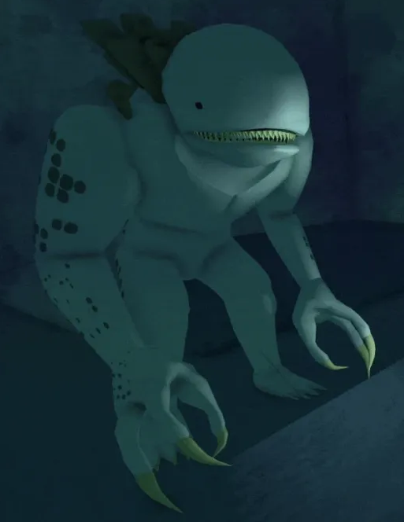

Aqui estão alguns elementos gerais das mecânicas de inimigos no jogo:
- Padrões de Ataque e Animações:
Cada inimigo possui um conjunto de ataques específicos e animações que indicam seus movimentos. Por exemplo, um inimigo pode levantar o braço antes de um golpe ou preparar um ataque carregado. Aprender a "ler" essas animações é essencial, pois ajuda o jogador a prever o próximo ataque e reagir de forma adequada. A maioria dos inimigos tem ataques que podem ser bloqueados, desviados ou interrompidos, e alguns ataques mais poderosos exigem o uso do "parry" (aparar) ou esquiva.
Dano em Área (AoE):
Muitos inimigos, especialmente os de maior porte, têm ataques em área que podem afetar uma zona ao redor deles. Esses ataques são projetados para impedir que os jogadores fiquem muito próximos por muito tempo. Para evitar ataques em área, o jogador deve prestar atenção ao alcance dos inimigos e se afastar no momento certo.
- Quebra de Defesa:
Alguns inimigos têm ataques que podem quebrar a defesa do jogador, mesmo quando bloqueados, causando um "stagger" (atordoamento) ou empurrando o jogador para trás. Jogadores precisam estar atentos a esses ataques e devem evitá-los ou desviar em vez de bloquear. Essa mecânica impede que o jogador dependa exclusivamente da defesa.
- Combate em Grupo:
Muitos inimigos atacam em grupos, especialmente os inimigos menores ou humanoides, como os bandidos. Grupos de inimigos podem cercar o jogador, o que torna o combate mais desafiador. Para lidar com isso, o jogador pode usar ataques de área ou eliminar os inimigos mais fracos primeiro para diminuir o número de ameaças.
- Níveis de Resistência e Vida
Os inimigos variam muito em resistência e saúde. Inimigos maiores, como Golems ou o Primadon, possuem alta defesa e saúde, o que faz com que o combate seja mais longo e exija que o jogador seja consistente e estratégico.
Alguns inimigos têm fraquezas específicas, como vulnerabilidades a certos tipos de dano (ex. físico, mágico), o que pode ser explorado pelos jogadores para derrotá-los mais rapidamente.
- Evasão e Contra-Ataque:
Muitos inimigos têm movimentos de evasão que fazem com que eles se afastem do jogador após um ataque, ou então têm habilidades que reagem a ações do jogador, como contra-atacar. A mecânica de contra-ataque dos inimigos desafia os jogadores a serem cuidadosos com seus próprios ataques e a aprender os momentos certos para atacar.
- Escala de Dificuldade por Região e Tipo:
Em Deepwoken, diferentes áreas têm inimigos com escalas de dificuldade variadas. As regiões mais avançadas terão inimigos mais poderosos e agressivos. Isso permite que jogadores iniciantes enfrentem inimigos mais fracos em áreas seguras e só progridam para regiões mais perigosas quando estiverem prontos.
- Habilidades Especiais e Elementais:
Alguns inimigos têm habilidades elementais (como fogo, gelo ou eletricidade), que causam efeitos de status no jogador, como queimadura ou congelamento. Isso adiciona outra camada de dificuldade, pois o jogador deve evitar ser atingido por esses ataques ou ter habilidades defensivas contra o elemento. Esses efeitos de status podem drenar a saúde ou energia do jogador ao longo do tempo, e lidar com esses inimigos exige que o jogador esteja preparado para neutralizar ou evitar esses ataques.
- Chefes e Mini-Chefes:
Chefes e mini-chefes possuem mecânicas únicas e uma combinação de habilidades que desafiam até os jogadores mais experientes. Eles frequentemente têm várias fases, onde seus padrões de ataque ou habilidades mudam à medida que perdem saúde, tornando o combate progressivamente mais difícil. Em muitos casos, os chefes exigem que os jogadores usem o ambiente ao seu favor ou que cooperem com outros jogadores para serem derrotados.
- Recompensas e Loot:
Inimigos mais fortes e chefes geralmente fornecem loot e recompensas melhores. Isso incentiva os jogadores a enfrentarem desafios maiores em busca de itens ou habilidades raras. Além disso, os inimigos podem dropar itens específicos que o jogador pode usar para melhorar seu personagem ou desbloquear habilidades especiais. Essas mecânicas tornam Deepwoken um jogo desafiador, onde cada inimigo apresenta um novo obstáculo e exige que os jogadores usem diferentes táticas para sobreviver. O jogo recompensa a habilidade, o tempo de reação e o conhecimento dos jogadores sobre as mecânicas de combate, criando uma experiência intensa e estratégica em cada encontro.
Os principais inimigos que você provavelmente encontrará na sua jornada serão:
Megalodaunt (Sharko):

Megalodaunt é um monstro gigante com forma de tubarão humanoide, encontrado comumente em Erisia, em barcos queimados no Mar Aratel, e nas Profundezas.
"Embora não pareçam criaturas particularmente inteligentes, eles possuem um forte senso de hierarquia social e sabem seu lugar em sua 'sociedade', se é que se pode chamar assim."
— Diário do Arquivista: Megalodaunt
Os Megalodaunts são conhecidos por seu comportamento social, evidenciado pelo fato de que um Megalodaunt pode se tornar um Alfa dentro de seu grupo, embora seja mais comum vê-los sozinhos do que em grupos. Eles são criaturas bípedes, com pele pálida e um conjunto de corais nas costas, que parecem ser utilizados apenas para fins ofensivos. Documentados como carnívoros, possuem características condizentes com essa natureza, com duas fileiras de dentes afiados na boca, peles resistentes e garras impressionantes. Às vezes, eles são vistos devorando o corpo de um Soldado da Autoridade, confirmando sua natureza carnívora.
Normalmente encontrados na ilha de Erisia, os Megalodaunts são um dos primeiros monstros que a maioria dos novos jogadores encontra, juntamente com os Mudskippers. Jogadores que estão despreparados ou que não possuem conhecimento sobre este monstro tendem a ser derrotados em questão de segundos.
Os Megalodaunts são naturalmente hostis a todas as outras criaturas no Etrean Luminant e atacam à vista tanto por questões de sobrevivência quanto territoriais. Até o momento, nunca foram observados em confronto entre si, embora demonstrem uma forte hostilidade contra a Variante Carmesim do Megalodaunt.
Quando derrotados, deixam cair Pele de Megalodaunt e Modificadores de Mantra, com uma baixa chance de os modificadores de mantras de nível superior. Eles também podem deixar cair Obsidiana Umbral de maneira incomum e, raramente, um Coral de Megalodaunt ou um Casaco de Megalodaunt.
Além de serem encontrados vagando em diversos locais ou em cavernas específicas, os Megalodaunts podem ser atraídos com o uso de uma Isca de Megalodaunt.
"Embora não pareçam criaturas particularmente inteligentes, eles possuem um forte senso de hierarquia social e sabem seu lugar em sua 'sociedade', se é que se pode chamar assim."
— Diário do Arquivista: Megalodaunt
Os Megalodaunts são conhecidos por seu comportamento social, evidenciado pelo fato de que um Megalodaunt pode se tornar um Alfa dentro de seu grupo, embora seja mais comum vê-los sozinhos do que em grupos. Eles são criaturas bípedes, com pele pálida e um conjunto de corais nas costas, que parecem ser utilizados apenas para fins ofensivos. Documentados como carnívoros, possuem características condizentes com essa natureza, com duas fileiras de dentes afiados na boca, peles resistentes e garras impressionantes. Às vezes, eles são vistos devorando o corpo de um Soldado da Autoridade, confirmando sua natureza carnívora.
Normalmente encontrados na ilha de Erisia, os Megalodaunts são um dos primeiros monstros que a maioria dos novos jogadores encontra, juntamente com os Mudskippers. Jogadores que estão despreparados ou que não possuem conhecimento sobre este monstro tendem a ser derrotados em questão de segundos.
Os Megalodaunts são naturalmente hostis a todas as outras criaturas no Etrean Luminant e atacam à vista tanto por questões de sobrevivência quanto territoriais. Até o momento, nunca foram observados em confronto entre si, embora demonstrem uma forte hostilidade contra a Variante Carmesim do Megalodaunt.
Quando derrotados, deixam cair Pele de Megalodaunt e Modificadores de Mantra, com uma baixa chance de os modificadores de mantras de nível superior. Eles também podem deixar cair Obsidiana Umbral de maneira incomum e, raramente, um Coral de Megalodaunt ou um Casaco de Megalodaunt.
Além de serem encontrados vagando em diversos locais ou em cavernas específicas, os Megalodaunts podem ser atraídos com o uso de uma Isca de Megalodaunt.
Thresher:

Os Threshers são crocodilianos hostis que surgem no Vale das Estrelas e nas Profundezas.
Eles podem ser encontrados frequentemente como ameaças individuais ou em duplas com outro Thresher e, mais raramente, acompanhados do Rei Thresher, formando uma família de Threshers.
Seu principal item de saque é a Espinha de Thresher, que pode ser usada para criar armaduras. Geralmente, há um baú de recompensa após derrotar esse monstro.
Eles podem ser encontrados frequentemente como ameaças individuais ou em duplas com outro Thresher e, mais raramente, acompanhados do Rei Thresher, formando uma família de Threshers.
Seu principal item de saque é a Espinha de Thresher, que pode ser usada para criar armaduras. Geralmente, há um baú de recompensa após derrotar esse monstro.